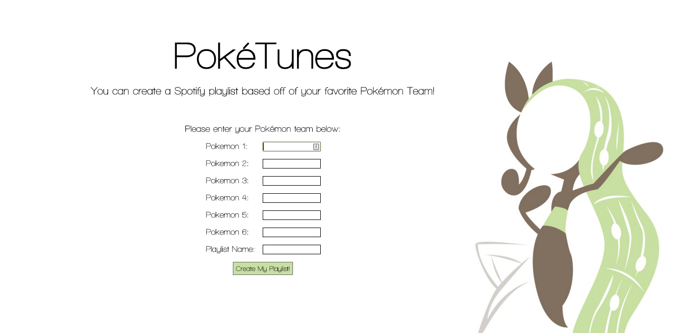

PokéTunes
This was a project done for HCDE 310. It creates a playlist based off of a Pokemon team by matching the Pokemon type retrieved from the PokeAPI with a genre from Spotify playlist.
Here is a YouTube demonstration of PokéTunes.
Team Members:
Maureen Fallen, Alex Heilgeist
My Contributions:
-
I handled the Pokemon API. I retrieved the information for all of the Pokemon and used python to extract each Pokemon's type then matched it with a genre and returned the infromation to be used with the Spotify API.
-
I created all of the HTML/CSS for the page.
-
I did all of the visual design, picking fonts, backgrounds and layouts.